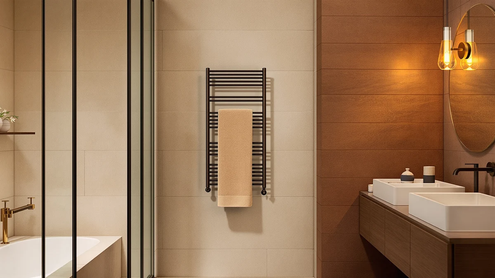

Best Rated Towel Warmers of 2026: 7 Top Picks | Best Towel Warmers
Prices and picks verified as of August 2026. Independent, reader-supported reviews.


Quick Answer
Among the best rated towel warmers we compared for 2026, the VERYTOP 23L Hot Towel Warmer is the one we recommend for most bathrooms. It pairs a roomy 23-liter stainless steel chamber with a $99.99 price and holds a steady 4-star rating. If you want to spend less, the AAOBOSI 20L at $49.45 covers the basics for under fifty dollars.
Our pick: VERYTOP 23L Hot Towel Warmer — $99.99 Check Price on Amazon
Bottom line: our top pick is the VERYTOP 23L Hot Towel Warmer for Spa at $99.99. The best budget option is the POWSAF Towel Warmer at $69.97.
Things to Know Before You Buy
- Two main styles. Bucket warmers like the VERYTOP 23L heat a folded towel inside an enclosed chamber, while flat rack models such as the SAMEAT hang the towel on heated bars.
- Capacity is listed in liters. A 20L to 23L chamber fits one large bath towel folded; smaller chambers suit hand towels and washcloths.
- Stainless steel is the norm. Every pick here uses a stainless steel build, which resists rust in a humid bathroom better than painted finishes.
- Price spans a wide band. Our seven picks run from $49.45 for the AAOBOSI to $101.99 for the Colliford, so your budget rarely forces a compromise.
- Ratings cluster tightly. All seven warmers hold a 4-star rating, so the choice comes down to size, style, and price rather than a clear quality gap.
A hot towel waiting when you step out of the shower is a small luxury, and a good towel warmer delivers it for less than you might think. We compared seven stainless steel models for 2026, looking at how much towel each one holds and where the price lands, then weighing that against what owners report after weeks of daily use. The VERYTOP 23L Hot Towel Warmer came out on top for most bathrooms.
You do not need to spend a fortune to get a warm towel waiting after a shower. Our picks start at $49.45 and top out near $102, and every one holds a 4-star rating. What separates them is format, not quality: a deep bucket that wraps a folded towel in heat, or a flat rack that drapes it over warm bars.
Here is what separates these seven and where each one fits, plus the honest drawbacks worth knowing before you buy. We kept the focus on what actually changes your daily experience: how much towel each one warms and how much space it claims on your counter or wall.
Why You Should Trust Us
Ilane Tall has covered bathroom and home upgrades for Best Towel Warmers since the site launched, and this guide to the best rated towel warmers follows the same approach we use across every roundup. We start from the products people actually buy, read through owner feedback, and weigh the specs that matter against the price each model asks.
We do not run a paid lab or accept free units in exchange for placement. Our recommendations lean on published specifications, current Amazon pricing, and the aggregate rating each warmer has earned from verified buyers. When a model has a weak spot, we say so in plain terms rather than burying it.
How We Picked
To build this list of the best rated towel warmers, we started with stainless steel models that hold a 4-star rating, since a rust-prone finish fails fast in a steamy bathroom. We set those against price, looking for warmers that justify what they cost rather than the cheapest unit on the shelf.
We then balanced the field across formats and budgets. The lineup runs from the $49.45 AAOBOSI up to the $101.99 Colliford, and it covers both enclosed bucket warmers and flat rack designs, so you can match the pick to your space and not the other way around.
How We Compared
We compared the best rated towel warmers on the points that shape daily use: how much towel the chamber or rack holds, how evenly the stainless steel surface spreads heat, and how the unit fits into a real bathroom layout. We judged bucket models on whether a full-size bath towel folds in without forcing the lid, and rack models on how much bar surface touches the fabric.
We weighed each warmer's price against its capacity and rating, then cross-checked owner reports for recurring complaints about heat-up time, cord placement, and build quality. The notes below reflect that read, including the flaws we would want flagged before you spend the money.
Our Picks

VERYTOP 23L Hot Towel Warmer
What we like
- Generous 23-liter chamber, the largest in our lineup
- Durable stainless steel build that shrugs off bathroom humidity
- Steady 4-star owner rating at a fair $99.99
Flaws but not dealbreakers
- Takes up real counter or floor space at this capacity
- Priced at the top of the mid-range, so budget shoppers may balk
| Material | Stainless steel |
| Size | 23L |
The VERYTOP 23L Hot Towel Warmer earns our top spot because it does the main job better than anything else here: it gets a full-size bath towel hot without making you fold it down to fit. At 23 liters, the stainless steel chamber is the roomiest in this group, and that extra space is what separates a towel that comes out warm all over from one that has a cold patch in the middle. For $99.99, you get the capacity without stepping into luxury-brand pricing.
Owners settle it at a 4-star rating, and the stainless steel housing is the kind of build that holds up in a room full of steam. The trade-off is footprint. A 23-liter warmer is a presence on the counter or floor, so measure your space before you commit. If you have the room and want the most reliable warm towel for the broadest range of households, this is the one we would buy among the best rated towel warmers.

SAMEAT Heated Towel Warmers for
What we like
- Flat heated-bar design mounts close to the wall
- Stainless steel construction at a $10 saving over our top pick
- Solid 4-star rating from owners
Flaws but not dealbreakers
- A rack warms the towel surface, not an enclosed chamber, so coverage is less complete than a bucket
- Mounting takes more setup than a freestanding unit
| Material | Stainless steel |
| Size | — |
The SAMEAT Heated Towel Warmer is our runner-up and the pick to reach for if a bucket does not suit your bathroom. Instead of an enclosed chamber, it drapes the towel over heated stainless steel bars, which keeps the footprint flat against the wall and out of the way. At $89.99 it undercuts our top pick by ten dollars while holding the same 4-star rating, so you are not paying a penalty for the different format.
A rack warms whatever touches the bars, so it works best when you spread the towel out rather than bunch it up. That is the honest trade against a bucket, which surrounds the fabric on all sides. If your wall has the space and you prefer a warmer that disappears into the room, the SAMEAT is a close second among these best rated towel warmers and the better fit for plenty of bathrooms.

FLYHIT Large Towel Warmer for
What we like
- Sized for large towels
- Stainless steel build at a sub-$80 price
- 4-star owner rating
Flaws but not dealbreakers
- Single size offers no smaller option for tight spaces
- Sits in the middle on features, without standout extras
| Material | Stainless steel |
| Size | One Size |
The FLYHIT Large Towel Warmer lands as a strong middle option, holding a large towel for $79.96. That price sits below our top two picks while still giving you the stainless steel build and the 4-star rating we required for this list. For a household that wants room for a full towel but does not want to cross the $90 line, it covers the brief cleanly.
It comes in one size, so there is no compact version if your bathroom is tight, and it does not chase the premium extras some pricier warmers add. What you get instead is a straightforward, well-rated warmer that does the core job at a friendly price. If value with real capacity is your priority, the FLYHIT deserves a long look among the best rated towel warmers in this range.

POWSAF Towel Warmer Luxury Towel
What we like
- One of the lowest prices on this list at $69.99
- Stainless steel build despite the budget tag
- 4-star rating holds up against costlier models
Flaws but not dealbreakers
- Smaller scale than the 23L VERYTOP
- Fewer frills than the premium tier
| Material | Stainless steel |
| Size | — |
The POWSAF Towel Warmer is our budget pick, and at $69.99 it proves you can get a warm towel without spending close to a hundred dollars. It keeps the stainless steel construction that runs through this whole list, and owners give it the same 4-star rating as warmers that cost thirty dollars more. For a guest bath, or a first warmer you are not sure you will use daily, that combination is hard to argue with.
You give up some scale next to the 23-liter VERYTOP, and you will not find the extras that pad out luxury models. Neither shortfall changes the result you care about, which is a hot towel waiting when you step out. If price is the deciding factor and you still want a unit that holds its rating, the POWSAF is the safe budget call among the best rated towel warmers we compared.

AAOBOSI Large Towel Warmers for
What we like
- Lowest price in the entire lineup at $49.45
- 20-liter chamber close to our top pick's capacity
- Stainless steel build and a 4-star rating
Flaws but not dealbreakers
- Bare-bones compared with pricier models
- Three liters smaller than the VERYTOP
| Material | Stainless steel |
| Size | 20L |
The AAOBOSI Large Towel Warmer is the price surprise of this group. At $49.45 it is the cheapest warmer we list, yet it carries a 20-liter stainless steel chamber that comes within three liters of our $99.99 top pick. That makes it the value standout: most of the VERYTOP's capacity for roughly half the money, with the same 4-star rating behind it.
The savings show up in the trimmings rather than the core function. You will not get the extras a luxury model advertises, and the chamber is a touch smaller than the VERYTOP's. For a second bathroom, a rental, or anyone testing whether a heated towel earns a spot in the routine, the AAOBOSI delivers the experience for the least money of any of the best rated towel warmers here.

Keenray Towel Warmer Luxury Towel
What we like
- Roomy 21-liter chamber, second only to the VERYTOP here
- Stainless steel build with a 4-star rating
- Established brand in the towel-warmer category
Flaws but not dealbreakers
- Matches the VERYTOP's $99.99 price with two liters less capacity
- No real savings over our top pick
| Material | Stainless steel |
| Size | 21L |
The Keenray Towel Warmer is a familiar name in this category, and it backs that reputation with a 21-liter stainless steel chamber, the second-largest in our lineup. It holds a 4-star rating and fits a full-size towel without a fight. For shoppers who like buying a known quantity, the Keenray is a dependable choice that does nothing to embarrass itself.
The catch is the price. At $99.99 it costs exactly the same as our top pick while giving you two fewer liters of chamber, which is why it sits in the also-great tier rather than at the front. If you find it discounted below the VERYTOP, the math tips in its favor. At parity, the extra capacity of our top pick is the tiebreaker among the best rated towel warmers in this price band.

Colliford Towel Warmer Stainless Steel
What we like
- Extended model gives extra towel coverage
- Stainless steel build with a 4-star rating
- Suits oversized bath sheets
Flaws but not dealbreakers
- Most expensive pick at $101.99
- Higher price without a clear edge over cheaper picks
| Material | Stainless steel |
| Size | Extended model |
The Colliford Towel Warmer is the priciest unit on our list at $101.99, and it earns that tag with an extended stainless steel design built for larger towels. If you reach for oversized bath sheets and want every inch warmed, the extra surface area is the draw. It carries the same 4-star rating as the rest of the field, so the quality bar is met.
What it does not offer is a clear reason to pay more than the others. The VERYTOP holds more in an enclosed chamber for two dollars less, and several picks here cost far less while hitting the same rating. The Colliford makes sense if its extended format specifically matches your towels. Otherwise, the savings sit with our other best rated towel warmers picks.
Quick Comparison
| Product | Material | Price | Rating | Best for | Get it |
|---|---|---|---|---|---|
| VERYTOP 23L Hot Towel Warmer | Stainless steel | $99.99 | 4 | Most bathrooms and full-size towels | View on Amazon → |
| SAMEAT Heated Towel Warmers for | Stainless steel | $89.99 | 4 | Wall-mounted setups | View on Amazon → |
| FLYHIT Large Towel Warmer for | Stainless steel | $79.96 | 4 | Large towels on a budget | View on Amazon → |
| POWSAF Towel Warmer Luxury Towel | Stainless steel | $69.99 | 4 | Low-cost stainless pick | View on Amazon → |
| AAOBOSI Large Towel Warmers for | Stainless steel | $49.45 | 4 | Best value | View on Amazon → |
| Keenray Towel Warmer Luxury Towel | Stainless steel | $99.99 | 4 | Trusted brand | View on Amazon → |
| Colliford Towel Warmer Stainless Steel | Stainless steel | $101.99 | 4 | Oversized bath sheets | View on Amazon → |
How much does a good towel warmer cost?
Among the best rated towel warmers we compared, prices run from $49.45 for the AAOBOSI 20L up to $101.99 for the Colliford.
Are bucket or rack towel warmers better?
Bucket warmers like the VERYTOP 23L surround a folded towel inside a heated chamber, so the whole towel warms evenly.
The Competition
Every warmer that made this list cleared our bar, so the competition here is really about which of these seven loses out for your specific bathroom rather than which ones are bad. The Colliford is the easiest to set aside for most people, since at $101.99 it asks the highest price without out-performing the cheaper enclosed warmers. The Keenray runs into the same problem at $99.99, matching our top pick's price with less chamber space.
Among rack-style options, the FLYHIT at $79.96 generally makes more sense than the pricier Colliford if you want surface heat on a budget, and the POWSAF undercuts both for buyers who care most about the bill. The AAOBOSI is the one to beat on value, with a 20-liter chamber for $49.45.
After comparing all seven of the best rated towel warmers, the VERYTOP 23L Hot Towel Warmer is the one we would put in most bathrooms, with the AAOBOSI 20L as the budget alternative when price leads the decision.
Frequently Asked Questions
How much does a good towel warmer cost?
Among the best rated towel warmers we compared, prices run from $49.45 for the AAOBOSI 20L up to $101.99 for the Colliford. You can get a stainless steel unit with a 4-star rating for under $50, so a higher price mostly buys more capacity or an extended format rather than better core performance.
Are bucket or rack towel warmers better?
Bucket warmers like the VERYTOP 23L surround a folded towel inside a heated chamber, so the whole towel warms evenly. Rack models such as the SAMEAT heat the bars the towel rests on, which keeps a slim profile against the wall. Pick a bucket for the most complete warmth and a rack when wall space and a flat footprint matter more.
What size towel warmer do I need?
Capacity is listed in liters, and a 20-to-23-liter chamber fits one large bath towel folded down. Our top pick, the VERYTOP, runs 23 liters, while the budget AAOBOSI holds 20. If you mostly warm hand towels a smaller chamber is fine; for full bath sheets, lean toward the larger sizes or an extended rack like the Colliford.
Is stainless steel important in a towel warmer?
Yes. Every pick here uses a stainless steel build because a bathroom stays humid, and stainless resists the rust that eats into painted or plated finishes. It is one reason all seven hold their 4-star rating, and it is a standard we held to across every one of these best rated towel warmers.